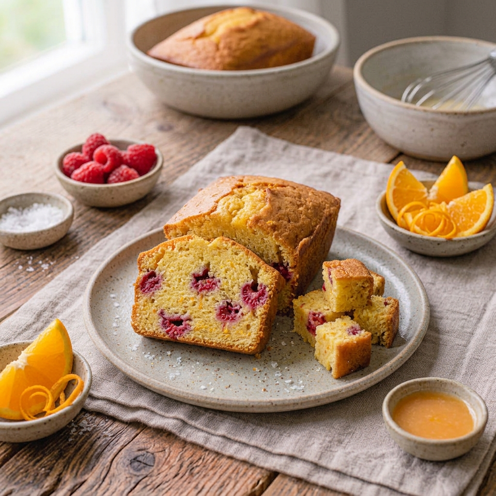

RECETA #028
Panqué Cítrico con Frambuesas

Ingredientes
- 150 g de mantequilla a temperatura ambiente
- 190 g de azúcar
- 5 piezas de huevo
- 1 pieza de naranja (ralladura y zumo)
- ¼ cucharadita de esencia oleica de naranja
- 1 cucharadita de polvo de hornear
- 370 g de harina
- 150 g de frambuesas frescas
Procedimiento
Engrasa el molde y precalienta el horno a 150°C al menos 10 minutos antes de hornear.
Acrema con el aditamento pala la mantequilla con el azúcar, el jugo y la ralladura de naranja durante 5 minutos.
Mezcla los huevos con la esencia de naranja y viértelos al batido en forma de hilo, poco a poco, permitiendo que se integren.
Cierne los ingredientes secos e intégralos en 3 partes, asegurándote de que cada tanto quede bien mezclado.
Vierte un tercio de la masa al fondo del molde, encima coloca un tercio de las frambuesas frescas, coloca otro tercio de masa y repite hasta terminar, en total serán tres capas.
Termina con frambuesas encima y hornea por aproximadamente 50 a 60 minutos.